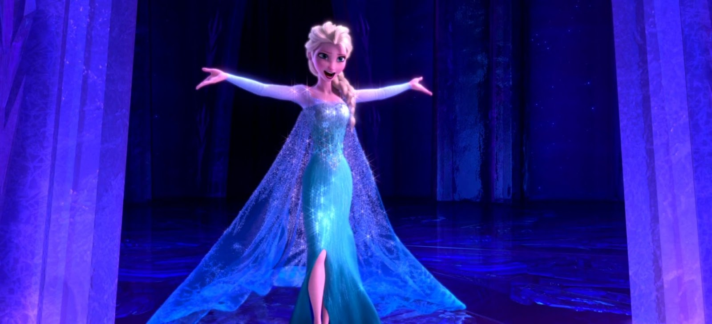
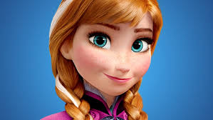

Elsa is the daughter of Agnarr and Iduna, older sister of Anna, and the former queen of Arendelle. Elsa was born with the powers to manipulate ice and snow and used them to entertain her sister. However, Elsa's lack of control resulted in her living in fear of hurting anyone with her powers, and she spent much of her early life shut out from the world. Though it pained her greatly to do so, Elsa also saw it necessary to distance herself from Anna, so there would be no risk of hurting her.
After her powers were exposed and nearly harmed several people, Elsa fled Arendelle to ensure such an incident never occurred again. In spite of her self-imposed exile, Elsa found peace, finally able to experiment with her powers without the fear of causing any more harm. Ultimately, Elsa was able to rekindle her relationship with her sister after learning how to fully control and appreciate her powers.
Queen Anna of Arendelle (pronounced Ah-na) is the protagonist of Disney's 2013 animated feature film, Frozen, and the deuteragonist of its 2019 sequel. She is the second-born daughter of King Agnarr and Queen Iduna, the younger sister of Elsa, and the contemporary ruler of Arendelle. During their childhood, an accident involving Elsa's magic created a rift between the two sisters, leaving Anna devoid of love and human company for many years. Despite this, Anna remained big-hearted and optimistic, albeit socially awkward. When their estrangement incidentally triggered an eternal winter, Anna embarked on a perilous journey to save her kingdom and mend the broken bond between herself and her sister.
